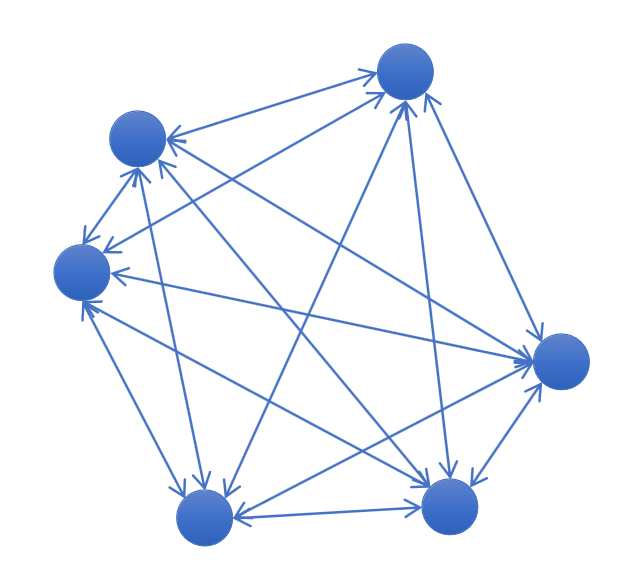
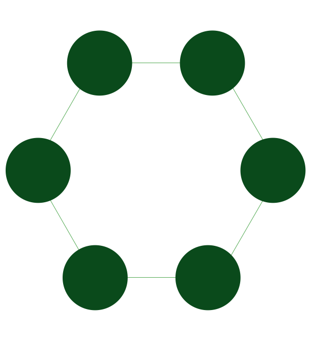
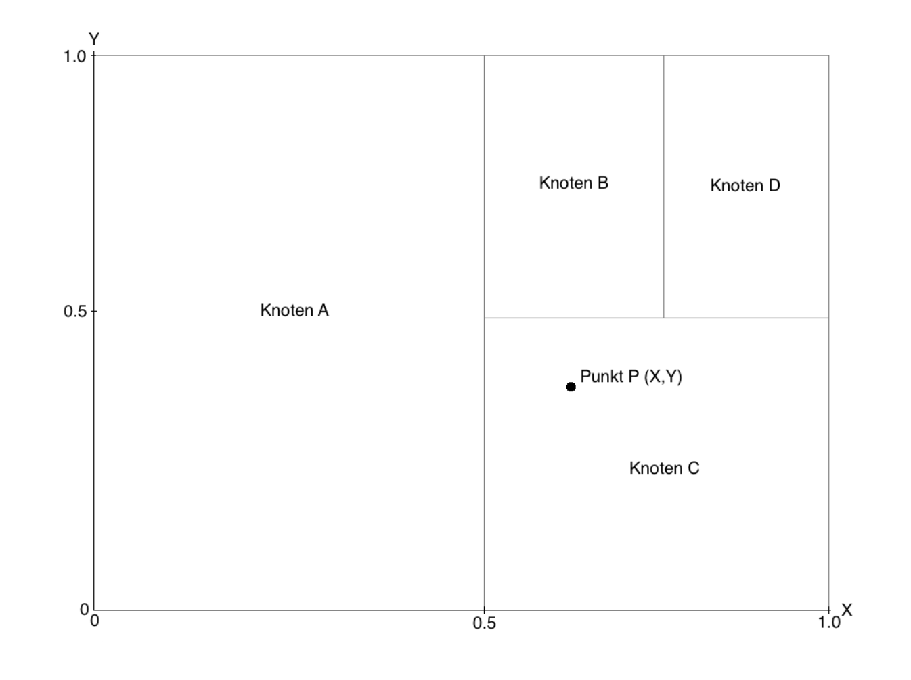
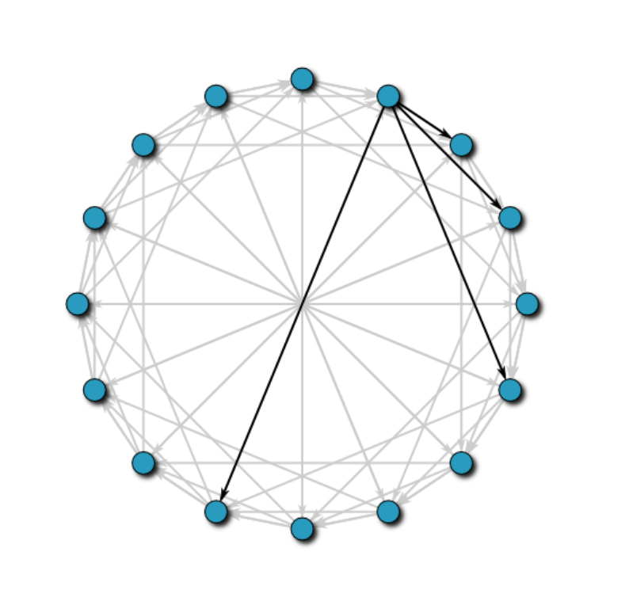
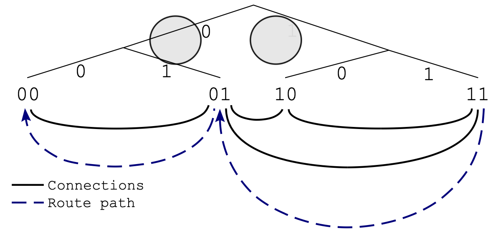

Distributed Hash Tables (DHTs)¶
links: AC2 TOC DPKI - Index
Overview¶
DHTs are decentralized, so all nodes form the collective system without any centralized coordination. They provide an easy way to find information in a large collection of data because all keys are in a consistent format, and the entire set of keys can be partitioned in a way that allows fast identification on where the key/value pair resides. The nodes participating in a distributed hash table act as peers to find specific data values, as each node stores the key partitioning scheme so that if it receives a request to access a given key, it can quickly map the key to the node that stores the data. It then sends the request to that node.
Nodes can be easily be added or removed without forcing a significant amount of re-balancing of the data in the cluster. Cluster rebalancing, especially for large data sets, can often be a time-consuming task that also impacts performance.
DHTs are the foundation of many large-scale peer-to-peer (P2P) networks and are used in applications such as file-sharing systems, content distribution networks and domain name systems.
Source: en: Hazelcast.com & en: Medium
- Distributed index
- Trade-off between
GET/PUTandJOIN/LEAVEcostsGETandPUToperations like a hash tableJOINandLEAVEoperations (internal)
- typically use exact match on cryptographic hash for lookup
- typically require overlay to establish particular connections
Key Properties of DHT¶
- routing table structure
- The routing table defines how easy / hard it is to find a route to a given destination / target
- lookup procedure
- The lookup procedure defines the way a value can be found in a DHT
- join operation process
- The join operation process defines how a new node is integrated into the DHT
- leave operation process
- The leave operation is the opposite of the join operation which means it defines how a node can leave the DHT
- cost (complexity) for each operation
- The cost / complexity give an estimate on how good a specific procedure performs in a specific DHT.
Various DHT¶
The Clique¶
Everyone knows everyone

- routing table: hash map of all peers \(\rightarrow \mathcal{O}(n)\)
- lookup: forward to closest peer in routing table \(\rightarrow \mathcal{O}(1)\)
- join: ask initial contact for routing table, copy table, introduce us to all other peers, migrate data we're closest to us \(\rightarrow \mathcal{O}(n)\)
- leave: send local data to remaining closest peer, disconnect from all peers to remove us from their routing table \(\rightarrow \mathcal{O}(n)\)
The Circle¶
Nodes are aligned in a circle and each node is connected with the two nearest neighbours.

- routing table: left and right neighbour in cyclic identifier space \(\rightarrow \mathcal{O}(1)\)
- lookup: forward to closest peer (left or right) \(\rightarrow \mathcal{O}(n)\)
- join: lookup own peer identity to find position, transfer data from neighbour for keys we are closer to \(\rightarrow \mathcal{O}(n)\)
- leave: ask left and right neighbour connect directly, transfer data to respective neighbour \(\rightarrow \mathcal{O}(1)\)
Content Addressable Network (CAN)¶

- routing table: neighbours in \(d\)-dimensional torus space \(\rightarrow 2d = \mathcal{O}(d)\)
- lookup: forward to closest peer \(\rightarrow \mathcal{O}(d \sqrt[d]{n})\)
- join: lookup own peer identity to find join position, split quadrant (data areas) with existing peer
- leave: assign quadrant space to neighbour(s) \(\rightarrow \mathcal{O}(d)\)
Chord¶
- routing table: predecessor in circle and at distance \(2^i\), plus \(r\) successors \(\rightarrow \mathcal{O}(log_2(n))\)
- lookup: forward to closest peer \(\rightarrow \mathcal{O}(log_2(n))\)
- join: lookup own peer identity to find join position, use neighbour to establish finger table, migrate data form respective neighbour \(\rightarrow \mathcal{O}((log_2(n))^2)\)
- leave: join predecessor with successor, migrate data to respective neighbour, periodic stabilization protocol takes care of finger updates \(\rightarrow \mathcal{O}(1)\)

Kademlia¶
- routing table: \(2^{160}\) buckets with \(k\) peers at XOR distance \(2^i\)
- lookup: iteratively forward to \(\alpha\) peers from the "best" bucket, selected by latency
- join: lookup own peer identity, populate table with peers form iteration
- maintenance: when interacting with a peer, add to bucket if not full; if bucket full, check if longest-not-seen peer is live first
- leave: just drop out

Properties
- XOR is a symmetric metric: connections are used in both directions
- Iterative lookup gives initiator much control
- Lookup helps with routing table maintenance
- Bucket size trade-off between routing speed and table size
- Iterative lookup is a trade off:
- good UDP
- bad with TCP (large number of connections)
links: AC2 TOC DPKI - Index